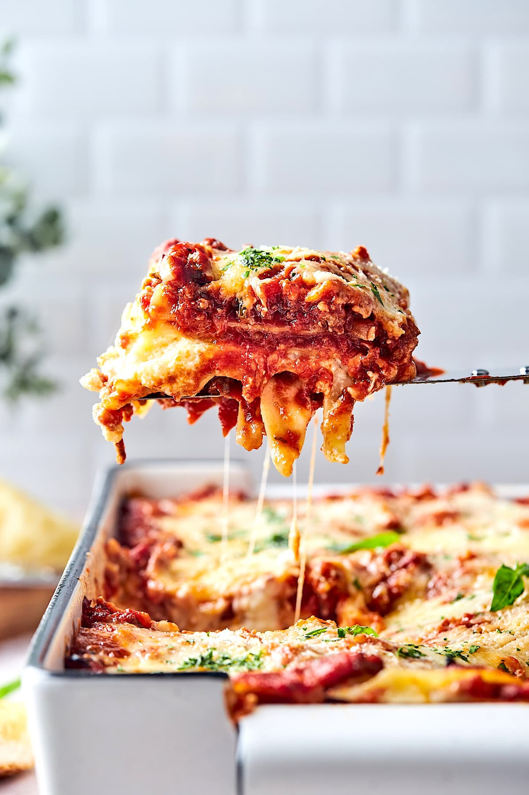

Lasagna

Lasagna is a classic Italian dish made with layers of pasta sheets, rich tomato sauce, seasoned meat, creamy béchamel sauce, and melted cheese. Baked until golden and bubbling, it is hearty, flavorful, and perfect for a comforting homemade meal. This recipe guides you
through making a delicious lasagna with simple ingredients and easy-to-follow steps.
Ingredients:
- 12 lasagna noodles
- 1 lb ground beef
- 1 jar marinara sauce
- 15 oz ricotta cheese
- 2 eggs
- 1/2 cup grated Parmesan cheese
- 1/4 cup fresh basil, chopped
Steps:
- Preheat the oven to 375°F (190°C).
- Cook the lasagna noodles according to package instructions. Drain and set aside.
- In a large skillet, brown the ground beef over medium heat. Drain excess fat.
- Add the marinara sauce to the cooked beef and simmer for 10 minutes.
- In a bowl, mix ricotta cheese, eggs, Parmesan cheese, and chopped basil.
- In a baking dish, spread a layer of meat sauce, followed by a layer of noodles, then a layer of the ricotta mixture. Repeat layers until all ingredients are used, finishing with meat sauce on top.
- Cover with foil and bake for 25 minutes. Remove foil and bake for an additional 15 minutes until cheese is bubbly and golden.
- Let it cool for 10 minutes before serving. Enjoy!
Back to Home